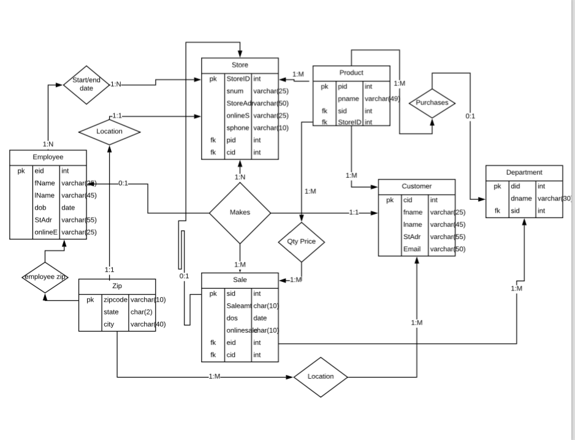
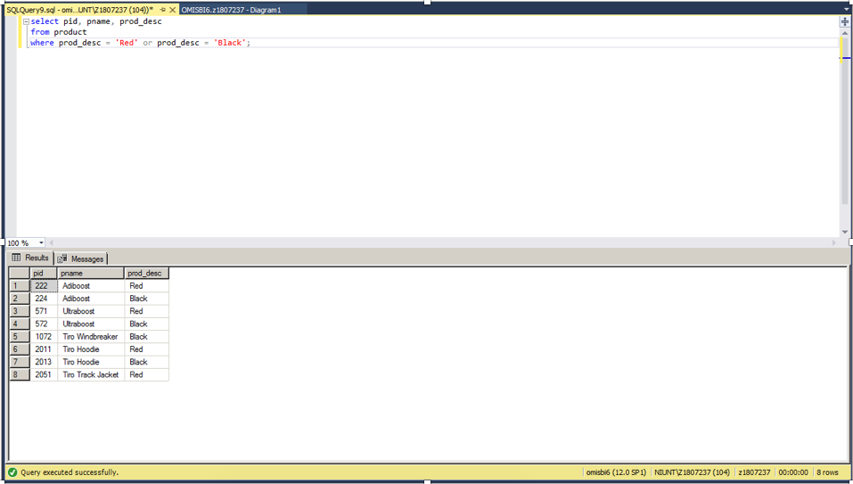
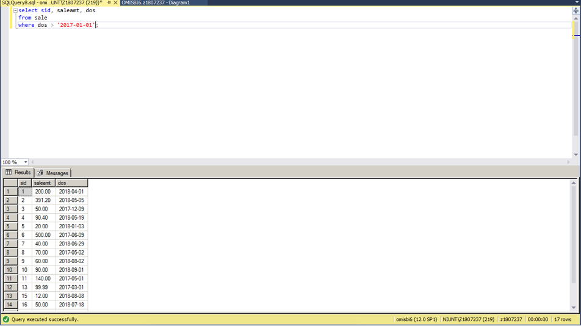
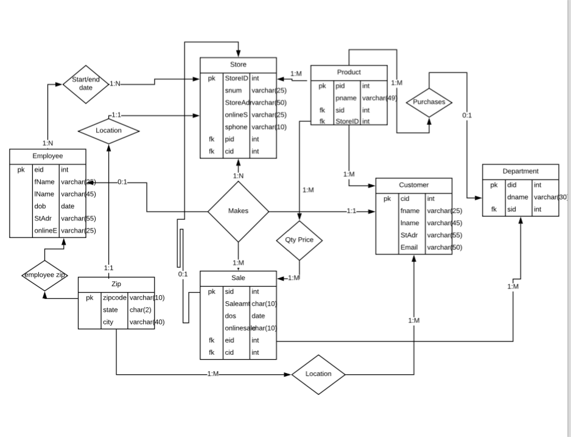
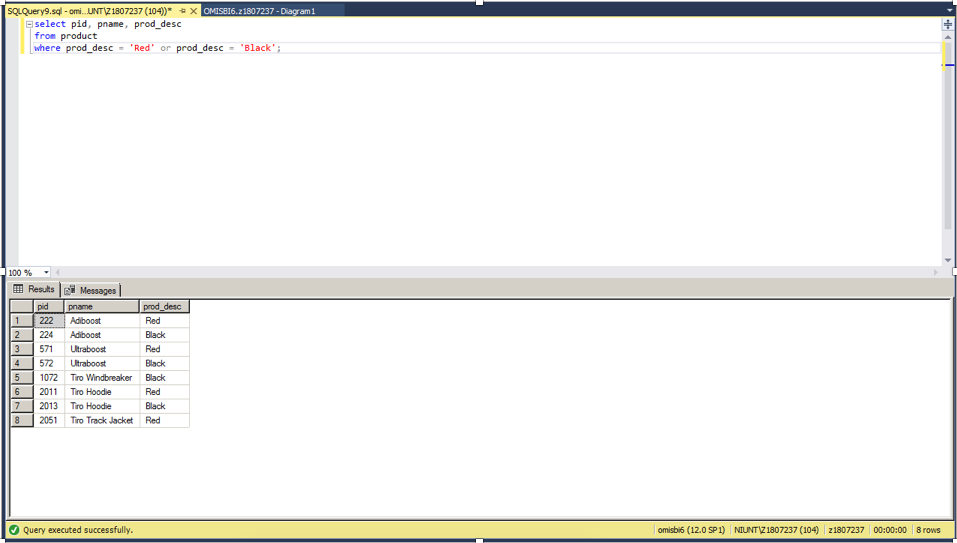
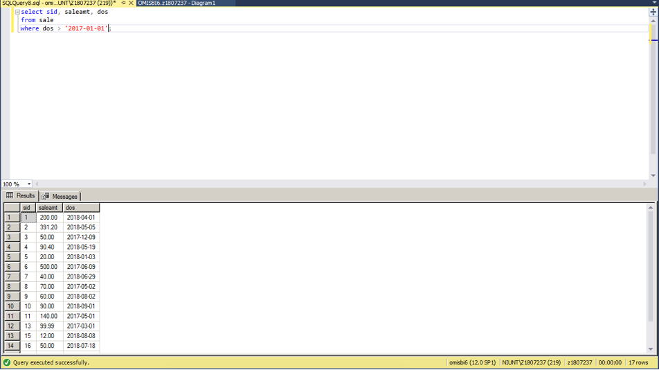

My Database Project!
Here are some examples of queries that I made during this project, and also showing a functional ER-Diagram .
  Here are some examples of queries that I made during this project, and also showing a functional ER-Diagram .
  